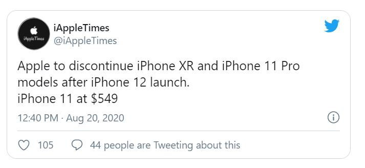

ลือ ราคา iPhone 12 เริ่มต้นตั้งแต่ 22,000 แพงสุดที่ 44,200 บาท
ปัจจุบันการจะทราบข้อมูลของสินค้าโดยเฉพาะ iPhone แบบล่วงหน้านั้นเป็นเรื่องง่ายไปแล้ว เพราะทุกปีก็มีข้อมูลหลุดออกมาก่อนเรื่อย ๆ ซึ่งล่าสุดมีภาพเรนเดอร์บางส่วนและราคาของ iPhone 12 ทุกโมเดลออกมาให้ชมกันก่อนแล้วด้วย
จากภาพข้างต้นจะเห็นว่า iPhone 12 นั้นมีทั้งหมด 4 โมเดล ได้แก่ iPhone 12, iPhone 12 Plus, iPhone 12 Pro และ iPhone 12 Pro Max โดย iPhone 12 และ iPhone 12 Plus นั้นจะมีกล้องทั้งหมดสองตัว ดีไซน์คล้ายกับ iPhone 11 ส่วน iPhone 12 Pro และ iPhone 12 Pro Max นั้นมีกล้องทั้งหมดสามตัว และเซนเซอร์ที่เพิ่มมาอีกหนึ่งอย่างซึ่งคาดว่าน่าจะเป็ร LiDAR เหมือนใน iPad Pro 2020
ด้านสเปกนั้น iPhone 12 จะมาพร้อมกับชิปประมวลผล Apple A14 หน่วยความจำ 6GB รองรับการเชื่อมต่อ 5G รีเฟรชเรตหน้าจอยังคงอยู่ที่ 60Hz เท่าเดิม (ในขณะที่เรือธงแบรนด์อื่นเริ่มไป 90-120Hz กันหมดแล้ว) ส่วนแบตเตอรีอาจจะรองรับการชาร์จให้อุปกรณ์อื่น (ซึ่งจริง ๆ ลำพังตัวเองยังไม่ค่อยรอด ก็คงต้องพัฒนามากกว่านี้)
คาดว่า Apple จะเปิดตัว iPhone 12 ทั้งหมดในเดือนตุลาคม ส่วนราคานั้นทางแหล่งที่มาระบุว่าจะมีราคาเริ่มต้นที่ $699 หรือประมาณ 22,000 บาท และแพงสุดที่ $1,399 หรือประมาณ 44,200 บาท ซึ่งราคาปัจจุบันนั้นแพงสุดจะอยู่ที่ 52,900 บาทก็ถือว่าถูกลงไปเยอะ หรือไม่ก็ราคานี้อาจจะเป็นราคาเฉพาะ iPhone 12 และ iPhone 12 Plus เท่านั้น ยังไม่นับ iPhone 12 Pro อ้างอิง Gizchina
นักวิเคราะห์ชี้! iPhone 12 จะใช้เลนส์กล้องใหม่, ส่วนกล้อง Periscope จะใช้ใน iPhone ปี 2022
Ming-Chi Kuo นักวิเคราะห์ผลิตภัณฑ์ Apple ชื่อดังจาก TF Securities ได้กล่าวถึงสเปกกล้องของ iPhone 12 iPhone 12 ที่จะเปิดตัวในปี 2020 นี้
เขาได้ระบุว่า Apple ได้ให้บริษัท Semco จากประเทศเกาหลีใต้ และ Sunny Optical จากประเทศจีน เป็นซัพปลายเออร์ผลิตเลนส์คุณภาพสูง โดยเลนส์ใหม่นี้จะมีประสิทธิภาพสูงขึ้น และปรับปรุง Autofocus ด้วย
ทั้งนี้ Ming-Chi Kuo ยังเชื่อว่า Apple จะเพิ่มเลนส์ Telephoto แบบ Periscope ให้แก่ iPhone ที่จะเปิดตัวในปี 2022 ซึ่งจะผลิตโดย Semco
ปล. กล้อง Telephoto แบบ Periscope มีประสิทธิภาพในการซูมที่ดีขึ้น และได้ถูกนำมาใช้ในสมาร์ตโฟนเรือธงอย่าง Huawei ด้วย
ได้มีการคาดการณ์ว่า Apple จะเปิดตัว iPhone 12 จำนวน 4 รุ่น ในเดือนกันยายน 2020 นี้ โดยจะมีหน้าจอขนาด 5.4 นิ้ว, 6.1 นิ้ว (2 รุ่น) และ 6.7 (รุ่น Max) อีกทั้งรุ่นพรีเมียมจะได้รับการติดตั้งกล้องหลัง 3 ตัว และเซนเซอร์ LiDAR วัดระยะความลึกของภาพ
ลือ Apple อาจจะเลิกขาย iPhone XR, iPhone 11 Pro และ iPhone 11 Pro Max หลังจาก iPhone 12 เปิดตัว
เป็นธรรมดาของการเปิดตัวมือถือที่รุ่นใหม่มารุ่นเก่าก็ต้องไปเพราะล่าสุดนี้มีแหล่งข่าวเปิดเผยออกมาเกี่ยวภายในแผนกของมือถือเองจะมีการเปลี่ยนแปลงช่วงเดือนกันยายน หลังจาก iPhone 12 และคาดว่าจะส่งมอบในเดือนตุลาคม ว่า
ข้อมูลดังกล่าวมาจาก @iAppleTimes ได้เปิดเผยว่าว่า iPhone 12 เปิดตัวแล้วจะมี iPhone SE 2020 เป็นตัวเริ่มต้นที่ขายเท่านั้น แต่ว่า iPhone XR ก็อาจจะต้องยุติดการขาย เพราะเมื่อปีก่อนมีการปรับลดราคาลงมาอยู่แล้ว โดยปีนี้จะปล่อยให้ iPhone 11 มาขายในตำแหน่งนี้แทน โดยปรับลดราคาลงจากเดิม และยกเลิกการขาย iPhone 11 Pro, 11 Pro Max ทันที คาดว่าเหมือนกับ iPhone XS, iPhone XS Max ที่เกิดขึ้นเพราะมีการเปลี่ยนแปลงที่มากพอสมควร ในปีก่อน
อย่างไรก็ตาม ก็ต้องดูกันต่อไปว่า รุ่นใหม่ที่จะมาแทนนั้นจะมีขุมพลังขนาด 5 นาโนเมตรใหม่ และมาพร้อมกับกล้องที่มีคุณสมบัติที่ทำงานได้ดีขึ้นเร็วขึ้น และจะน่าใช้ขึ้นจริงแค่ไหน